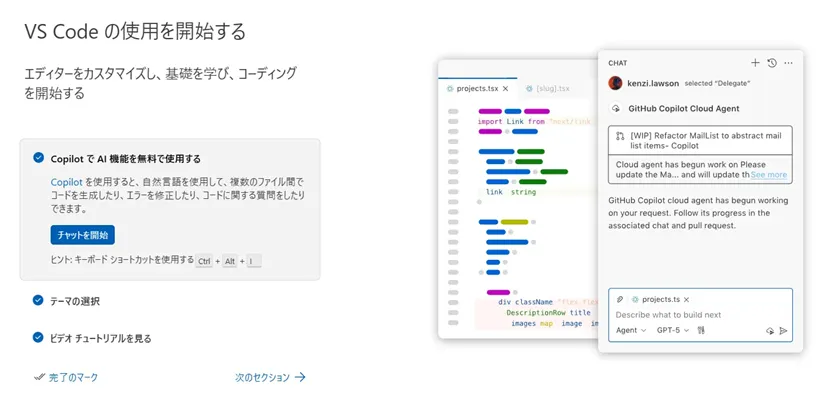

プログラミング初心者が見つけた入門用エディタ
Pythonの学習を始めたばかりの自分はコードを入力するときWindowsに標準で搭載されている「メモ帳」を使っていました。
ですが、メモ帳だと文字に色がつかないのでコードが見づらく、ちょっとした入力ミスにも気づきにくくて「そろそろPython向けのエディタを使ってみようかな」と思うようになってきた頃合いです。
そこで調べてみると、よくおすすめされているのは「Visual Studio Code（VS Code）」というエディタ。
さっそく調べてみたのですが、機能がとても豊富で拡張機能や設定項目も多く、プログラミングを始めたばかりの自分は「ちょっと難しそうかも…」と感じてしまいました。
そんなときに知ったのが、Python学習向けエディタの「Thonny（ソニー、もしくはトニー）」です。
本題に入る前に軽く触れておくと、「Python（パイソン）」というのは読みやすくシンプルな文法が特徴のプログラミング言語です。
Webサイトの開発や業務の自動化、AIなど幅広い分野で使われていて、初心者でも始めやすいと言われています。そんなPythonをより快適に学ぶために、自分に合ったエディタを探すことにしました。
実際にThonnyを導入してみて、初心者の視点から「使いやすいな」と感じたポイントを紹介します。
通常、プログラミングを始めるときは「Python本体」と「エディタ」をそれぞれ準備する設定（環境構築）が必要で、ここでつまずく人も多いそうです。
ですが、Thonnyは最初からPythonが一緒に同梱されているため、インストールして起動するだけで準備が完了します。面倒な設定なしですぐに使えるのがありがたい。
海外製のエディタは最初に日本語化の設定が必要なことも多いですが、Thonnyは起動直後からUI（操作画面）を日本語で表示できました。難しい設定なしでそのまま日本語で使えるのもうれしいポイント。
画面を開いたとき、「おお、すごくスッキリした画面でどれが何なのかすぐわかるぞ！」と思いました。
画面上に余計なボタンや複雑なメニューがなく、上に「実行」や「停止」などの基本ボタンが並んでいるだけです。デザインもシンプルなので、どの機能がどこにあるのか直感的に理解できて、迷わず操作できました。
📷 Thonnyのシンプルな操作画面

コードを実行したときに、変数にどんな値が入っているのかが画面上で見やすく表示されます。プログラムが1行ずつどう動いているのかを視覚的に追えるので、文法を理解するのにとても役立ちました。
また、コードを間違えたときに出てくるエラー表示も、アシスタント機能が初心者向けにやさしく解説してくれるので助かっています。
最終的には、高機能で圧倒的なシェア率を誇る「VS Code」を使えるようになるのが良いのだと思います。
ただ、「まずは最低限の機能がついたシンプルなエディタを使って、気軽にPythonの学習を進めたい！」という方には、とてもとっつきやすいエディタだと感じました。
「メモ帳だと少し使いづらいけれど、いきなり高機能なエディタを使うのは不安…」という方は、選択肢のひとつとしていいのではないでしょうか。